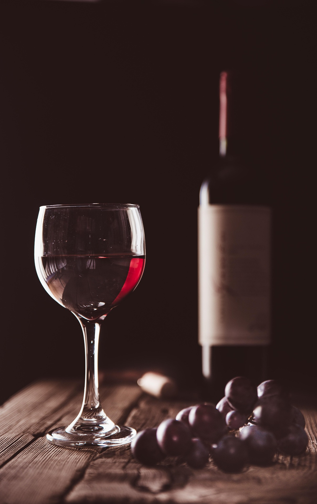
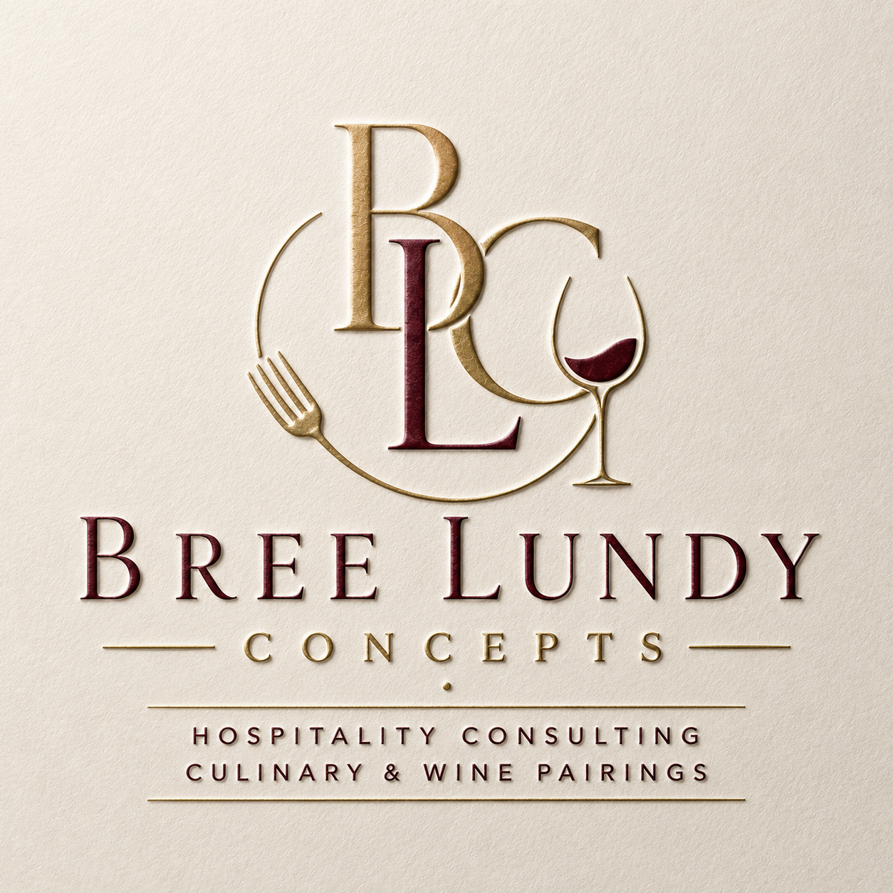

Welcome to Bree Lundy Concepts

Guests remember how you made them feel. It's not accidental when a guest feels valued and cared for. It's built through experience, attention to detail, and understanding what people are going through. With nearly 30 years of experience spanning culinary operations, beverage programs, leadership development, and hospitatlity strategy, Bree Lundy Concepts helps restaurants, wineries, clubs and hospitality organizations create memorable spaces where guests feel the need to give their experiences to the people they care about. Located in Great Falls Montana, our consultancy helps you to better understand and fill the needs of your customers. Schedule with us today to see what we can do for your business improving profitability, team performance, and guest satisfaction.
